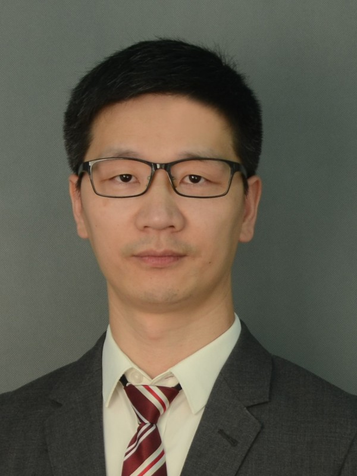
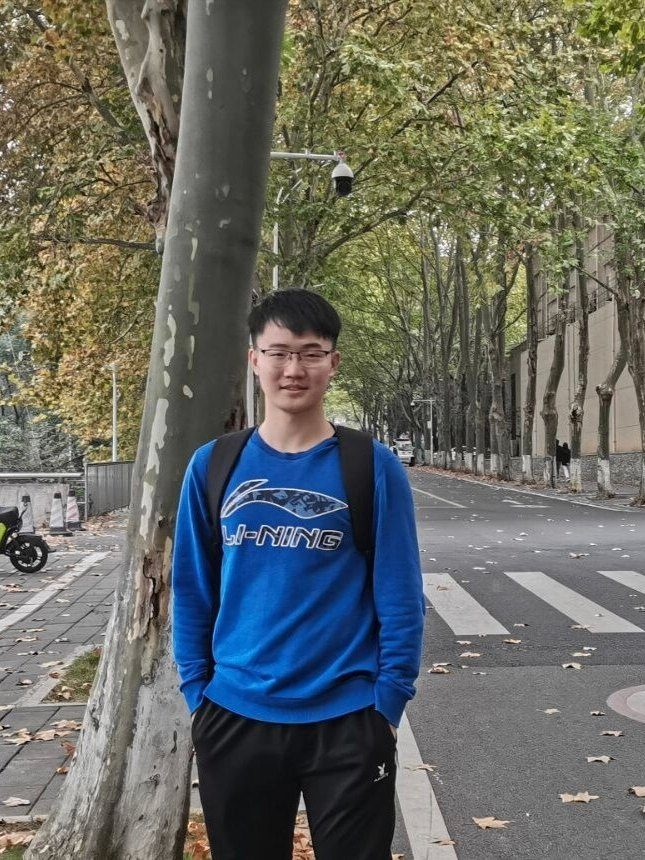
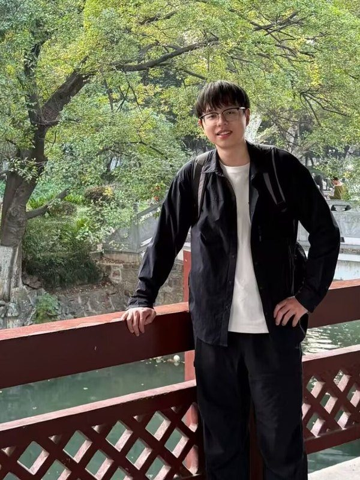
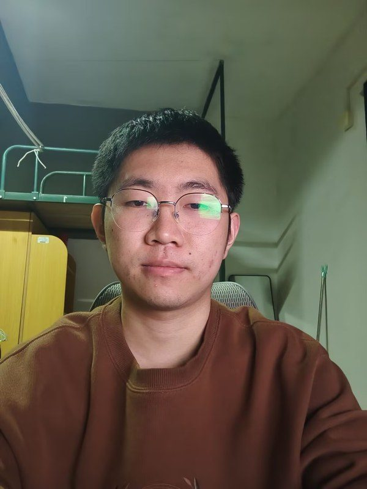
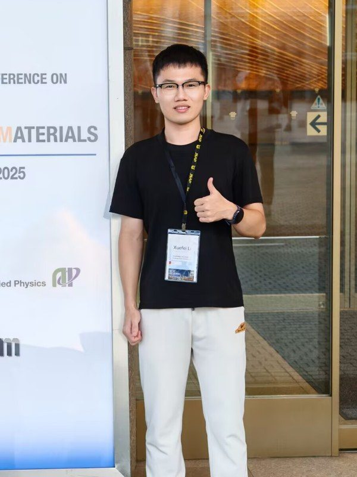
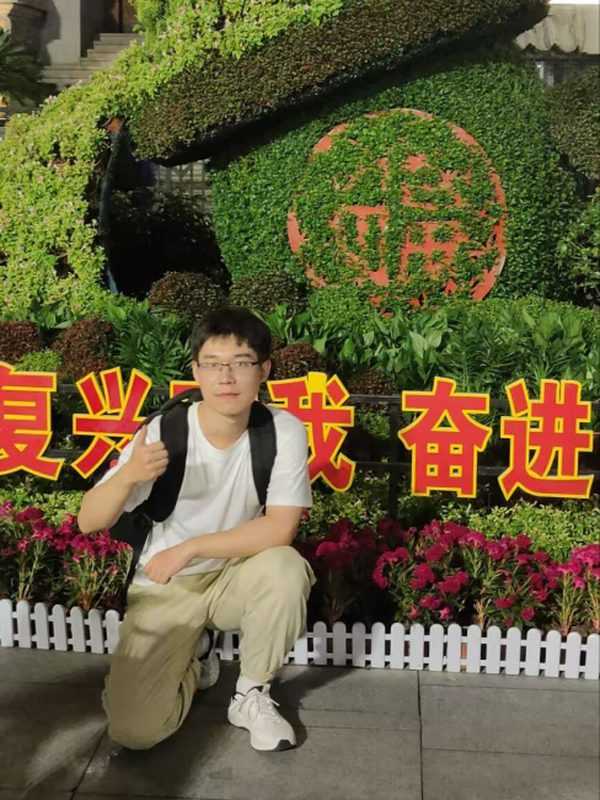
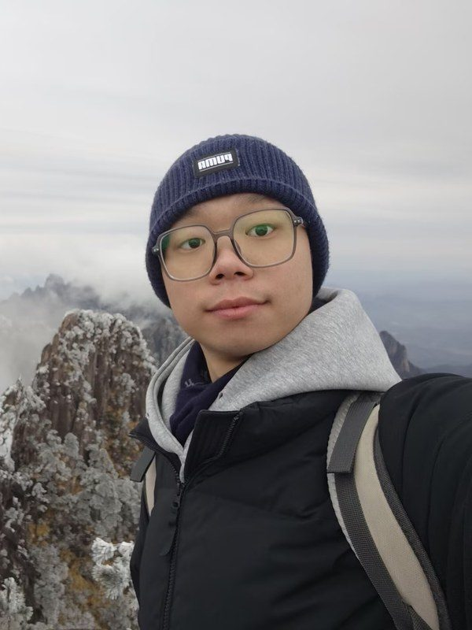

Members
[Optional: one or two sentences about the group's composition, its working style, or where members go on to work.]

Prof. Xuefei Li
Associate Professor, School of Integrated Circuits
Huazhong University of Science and Technology
[Two or three sentences: the questions the group is pursuing, and the path that led here. Degrees, previous institutions, and what the lab is trying to build.]
- xfli@hust.edu.cn
- Office
- [Building, room number]
- Profiles
- Google Scholar, ORCID
- CV
- Curriculum vitae (PDF)
PhD students
-

Jiayao Hao
Jiayao Hao received his B.S. degree from the School of Integrated Circuits at Huazhong University of Science and Technology in 2024. He is currently pursuing his Ph.D. degree at Huazhong University of Science and Technology.
-
Kaisheng Hu
Kaisheng Hu received the B.S. degree from Huazhong University of Science and Technology in Microelectronics Science and Engineering. Kaisheng Hu is currently pursuing the Ph.D. degree at Huazhong University of Science and Technology.
-
Kai Wang
Kai Wang received his B.S. degree from School of Integrated Circuits at Huazhong University of Science and Technology in 2024. He is currently pursuing the Ph.D. degree at Huazhong University of Science and Technology.
-
Lei Sun
Lei Sun received the B.E. degree from Huazhong University of Science and Technology in 2022. She is currently pursuing the doctoral degree at Huazhong University of Science and Technology.
-
Shufeng Meng
Shufeng Meng received the B.Eng. degree from Zhengzhou University in 2026. He is currently pursuing the Ph.D. degree at Huazhong University of Science and Technology.
-
Hongyao Guo
Hongyao Guo received the B.S. degree from Huazhong University of Science and Technology in 2026. Hongyao Guo is currently pursuing the Ph.D. degree at Huazhong University of Science and Technology.
-

Haotian Liang
Haotian Liang received his B.S. degree from the School of Integrated Circuits at Huazhong University of Science and Technology in 2024. He is currently pursuing his Ph.D. degree at Huazhong University of Science and Technology.
-
Qipeng Wang
Qipeng Wang received the B.S. degree from Hefei University of Technology in 2026. He is currently pursuing the Ph.D. degree at Huazhong University of Science and Technology.
-
Peiyan Hong
Peiyan Hong received the B.S. degree from Huazhong University of Science and Technology in 2022. He is currently pursuing the Ph.D. degree at Huazhong University of Science and Technology.
-

Jianye Zhang
Jianye Zhang received the B.S. degree from Huazhong University of Science and Technology in 2025. Jianye Zhang is currently pursuing the Ph.D. degree at Huazhong University of Science and Technology.
-
Jiaming Zhao
Jiaming Zhao received her B.S. degree from the School of Materials Science and Engineering at Central South University in 2024. She is currently pursuing her Ph.D. degree at Huazhong University of Science and Technology.
-

Jiakang Li
Jiakang Li received the B.S. degree from 2023 in Microelectronics and is currently pursuing a Ph.D at Huazhong University of Science and Technology.
-

Chenchen Ye
Chenchen Ye received the B.S. degree from Huazhong University of Science and Technology. He is currently pursuing the Ph.D. degree at Huazhong University of Science and Technology.
Master's students
-
Yafei Ren
Yafei Ren received the B.S. degree from Hebei University of Technology in 2026. Yafei Ren is currently pursuing the master’s degree at Huazhong University of Science and Technology.
-
Huibo Liu
Huibo Liu received the B.S. degree at Hebei University of Technology. Huibo Liu is currently pursuing the M.S. degree at Huazhong University of Science and Technology.
-

Zhenyu Zhang
Zhenyu Zhang received his B.S. degree from the School of Integrated Circuits at Huazhong University of Science and Technology in 2024. He is currently pursuing his M.S. degree at Huazhong University of Science and Technology.
-
Qiu Dongying
Qiu Dongying received the B.S. degree in Electronic Science and Technology from Dalian University of Technology in June 2024. She is currently pursuing the master’s degree in Integrated Circuit Engineering at Huazhong University of Science and Technology.
Undergraduate researchers
-
Yabo Xie
I received the B.S. degree in Physics from Central China Normal University. I am currently pursuing the Ph.D. degree at Huazhong University of Science and Technology.
Openings
[PhD and postdoc positions available]
We are looking for people with a background in [field one], [field two] or [field three]. What matters more than a specific degree is evidence that you can build something and finish it.
Send a CV, transcripts and a short note on what you would like to work on to xfli@hust.edu.cn. Applications are read on a rolling basis.